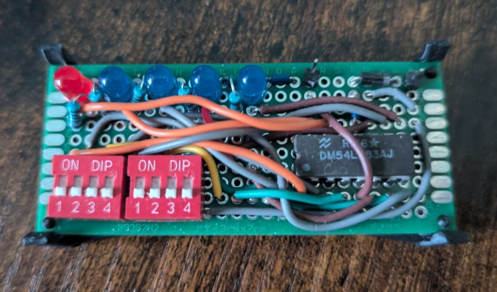
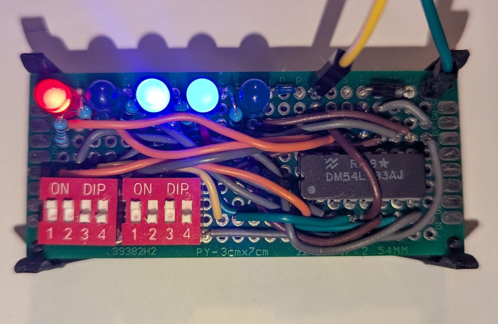
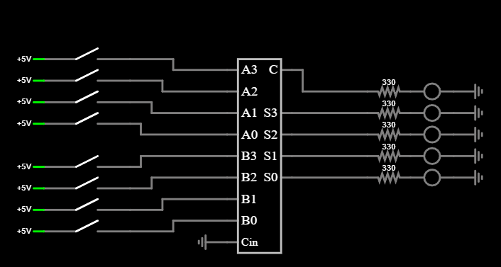

This project is a simple 4-bit binary adder built using the SN54LS83 IC. It takes two 4-bit numbers as input (set using DIP switches) and outputs a 5-bit result, including the carry-out. The sum is shown on five LEDs so you can directly see the binary output. The whole circuit runs on 5V and was soldered by hand by me on a perfboard.
I built this as a follow-up to my earlier relay-based adder and as my first project using logic ICs. The relay version performed the same function, but it was much larger, required many more components, and consumed significantly more current. By switching to an integrated circuit, the design became far more compact, efficient, and practical while still preforming exactly the same binary addition. It was a great way to directly compare old electromechanical logic with modern semiconductor-based digital logic.

The image above shows the adder in operation, adding 1100 (12) and 1010 (10). The LEDs display the result 10110 (22), correctly including the carry-out bit as the fifth output. This demonstrates the full 4-bit addition proces and confirms that the circuit is functioning exactly as expected.

The schematic above shows a simplified overview of how the circuit is wired and how the connections are arranged around the IC. It reflects the general structure of the design rather than an exact pin-for-pin layout. One important detail is that, while the schematic represents standard 5V logic levels (with 5V as HIGH), the particular chip I used behaves inverted in my setup, meaning 0V acts as HIGH and 5V acts as LOW. (I don't know why—it works with 0V as HIGH and 5V as LOW even though the datasheet shows 5V as HIGH, but this is simply how I got it to work) Aside from this inverted logic behavior, the overall operation of the circuit remains the same and performs standard 4-bit binary addition.